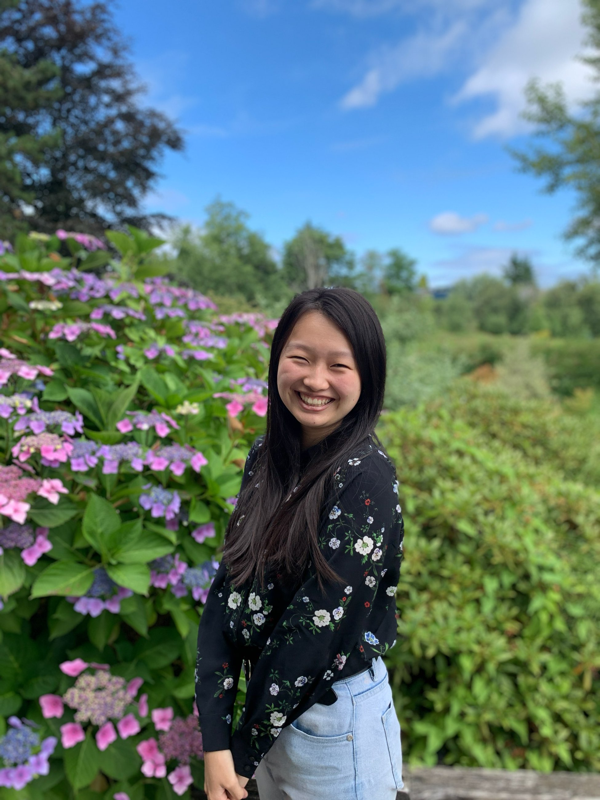

Men's Small Group (Tues 8-10pm) - Joey Chang
Born in Berkeley and grew up in El Cerrito until I moved to Fremont
in 6th grade. After graduating high school I took a semester off to
do missionary work with the organization YWAM in New Zealand, China,
and Mongolia. Coming back I attended Chabot Community College for 2.5 years
and then transferred to Cal in 2020 so with the pandemic 2021 is my first
time being on campus as a student.

Women's Small Group (Tues 8-10pm) - Christianna Xu
Hello! I'm leading women's small group this year. I'm a senior studying
computer science and in my free time, I like to dance, play video games,
watch netflix (mostly kdramas :)), play sports, and just hang out with
people. Feel free to check out small group anytime as anyone is welcome!
Newcomer's Small Group (Mon 8-10pm) - Linda Chen, David Chen
Hallo! I'm Linda, and I'm a 4th year pre-nursing MCB major :D In my spare
time, I enjoy dancing with AFX and baking for my small group. I am passionate
about studying the Word, especially with Roman history/culture and Asian-American
culture in mind. My favorite verses are Romans 12:10, Psalm 51:17, and Isaiah 43:1.
Looking forward to meeting you in small group!! :3

Hi! I’m a fourth year Data Science major who really likes making apps and loves Jesus.
The only other club I’m in is a travel magazine I founded called Caravan. Excited to
lead newcomers small group!
Josh Quan
I'm a 3rd year majoring in Materials Science and Engineering, and
minoring in Japanese. In my free time, I like to sleep, play video games,
and draw.

Matt Tang
Hi, I'm Matt, and I'm a 4th year EECS major. AACF has been a core part of
my college experience for the past four years, so I'm excited to be serving
on leadership! In my free time, I enjoy trying new foods, travelling, and
making/solving puzzles. The biggest event that I host is an annual week-long
puzzle hunt for the fellowship at around Jan/Feb, so stay tuned for that!
Athalia "Lia" Djuhana
Athalia's a senior who's been connected to AACF since her first year at Cal.
She's also worked all over campus. So, if you need to get connected to student
life, orientation, res life at Cal, student government, prelaw organizations
and more— this political science and sociology double major's got the answers.
But— most importantly-- she's AR 57 on Genshin Impact.
Lia's a big fan of the new testament and discussions of the new covenant, and
is currently focused on growing in fellowship with others post-pandemic.
Stephany Su
Hello! My name is Stephany, and I am a 4th year studying Political Economy
and minoring in Chinese. On campus, I am involved in the ASUC Legal Office
and Asian American Christian Fellowship. I grew up in the Bay Area, and on
my free time, I enjoy hiking the Berkeley Hills, playing frisbee, and watching
K-dramas.